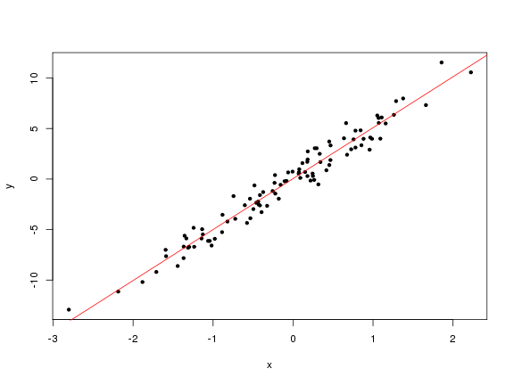
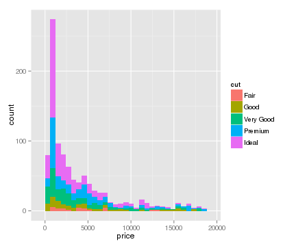
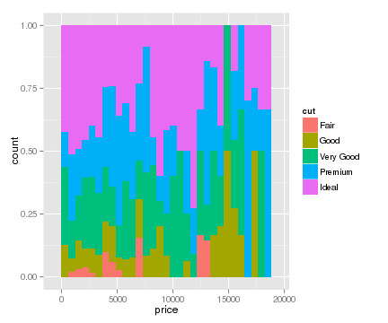

- R: Born for statistics.
- Thousands of packages for data analysis
- Reproducible report
- knitr
- slidify
- rmarkdown
- Data Visualization
- ggplot2
- rCharts
- Web application
- shiny
Introduction to R
with unique features
Tong He
Outline
The GNU-R project
R: Born for statistics
History:
- From the S language, which is inspired by Scheme.
- Created by Ross Ihaka and Robert Gentleman.
R: Born for statistics
R is strong for statistical missions.
- Strong matrix calculation ability
- Native support for statistics
- Abundant third-party packages
R: Born for statistics
groupA = rnorm(100,5,3)
groupB = rnorm(25,10,3)
groupA
## [1] 8.7247 4.5361 0.3788 -0.8695 3.2872 3.4701 2.8546 3.5315
## [9] 6.1452 9.4967 8.5841 1.4677 7.4127 5.6425 5.8835 5.5284
## [17] 5.0099 6.0896 9.3668 2.2322 2.5924 -0.4686 7.6782 3.4858
## [25] 3.1851 4.5650 4.8263 1.9470 6.2423 3.5898 3.6703 5.9814
## [33] 2.3010 6.8946 1.0961 5.9623 0.1530 3.9873 7.7199 4.4135
## [41] 8.6039 0.7672 10.6175 7.3712 7.9363 10.1943 3.7506 4.0459
## [49] -3.7036 5.0571 5.7533 4.6721 6.7473 1.5737 0.1261 10.4451
## [57] 9.0248 -0.1060 3.9819 1.2864 4.0724 11.1422 3.7656 7.5389
## [65] -0.9361 0.3266 3.8153 2.3117 2.5620 5.3630 2.7921 7.3520
## [73] 3.1333 5.8310 3.8323 8.3736 5.2174 5.0827 6.6860 4.7006
## [81] 5.0347 7.1327 9.4149 7.0446 5.8658 8.3377 3.1650 4.3835
## [89] -0.8057 3.4256 10.7067 1.0343 7.8309 5.4453 9.1047 4.5595
## [97] 6.3318 11.8561 3.5041 8.1146
groupB
## [1] 7.402 7.090 11.660 7.991 9.747 8.846 8.614 8.422 12.317 9.130
## [11] 10.138 9.953 8.440 9.002 11.019 10.991 11.115 8.688 9.193 8.710
## [21] 9.577 5.530 7.097 7.974 5.888
R: Born for statistics
t.test(groupA,groupB,alternative = c("less"))
##
## Welch Two Sample t-test
##
## data: groupA and groupB
## t = -8.866, df = 69.85, p-value = 2.365e-13
## alternative hypothesis: true difference in means is less than 0
## 95 percent confidence interval:
## -Inf -3.304
## sample estimates:
## mean of x mean of y
## 4.912 8.981
R: Born for statistics
x = rnorm(100)
y = 5*x+rnorm(100,0,1)
lm.model = lm(y~x)
lm.model
##
## Call:
## lm(formula = y ~ x)
##
## Coefficients:
## (Intercept) x
## -0.06 4.96
R: Born for statistics
summary(lm.model)
##
## Call:
## lm(formula = y ~ x)
##
## Residuals:
## Min 1Q Median 3Q Max
## -2.0235 -0.7848 -0.0118 0.6506 2.4621
##
## Coefficients:
## Estimate Std. Error t value Pr(>|t|)
## (Intercept) -0.0600 0.0987 -0.61 0.55
## x 4.9557 0.0980 50.55 <2e-16 ***
## ---
## Signif. codes: 0 '***' 0.001 '**' 0.01 '*' 0.05 '.' 0.1 ' ' 1
##
## Residual standard error: 0.987 on 98 degrees of freedom
## Multiple R-squared: 0.963, Adjusted R-squared: 0.963
## F-statistic: 2.55e+03 on 1 and 98 DF, p-value: <2e-16
R: Born for statisitics
plot(x,y,pch=20)
abline(lm.model,col=2)

Third party packages
- CRAN(The Comprehensive R Archive Network) is managing over 5,000 R packages.
- Strict quality control
- Task Views
- My package xgboost
- R-Forge is an SVN repository for packages.
- Bioconductor focus on biostat and bioinfo packages.
- Github more flexible.
Third party packages
To install a package, say xgboost, on CRAN, just type
install.packages('xgboost')
To install xgboost from github, we need
require(devtools)
install_github('xgboost','tqchen',subdir='R-package')
The community and environment
The community
- Mailing lists
- Stackoverflow / Cross Validation
- R conference
The environment
- IDE: RStudio
- Server version for collaboration
- Many fancy stuffs later
- Commercial version
- Revolution
Unique features in R
Vectorization
a = 1:1000000
b = 1:1000000
system.time({a+b})
## user system elapsed
## 0.032 0.001 0.033
system.time({
for (i in 1:length(a))
a[i]+b[i]
})
## user system elapsed
## 0.964 0.007 0.973
Let C to do loop.
Vectorization
R is also strong in (sparse) matrix computation.
library('Matrix')
m1 = matrix(0, nrow = 1000, ncol = 1000)
m2 = Matrix(0, nrow = 1000, ncol = 1000, sparse = TRUE)
object.size(m1)
## 8000200 bytes
object.size(m2)
## 5632 bytes
Vectorization
m1[500, 500] <- 1
m2[500, 500] <- 1
object.size(m1)
## 8000200 bytes
object.size(m2)
## 5648 bytes
Vectorization
m2 %*% rnorm(1000)
m2 + m2
m2 - m2
t(m2)
Vectorization
R can also take advantage from the parallelization of *BLAS libraries. There are several choices:
- OpenBLAS
- ATLAS
- HiPLAR
Here's a tutorial for apt-get style installation on Ubuntu.
Reproducible Report
Insert code and result in a slide is painful.
- Copy & paste
- Formatting
- Update code and report seperately
Reproducible Report
rnums = rnorm(10000)
head(rnums)
## [1] 1.0507 0.3592 -0.1029 1.0026 1.5919 0.3095
hist(rnums,breaks=50)
Reproducible Report
This is supported by the package knitr:
- Markdown-based grammar with HTML codes as extension
- Webpage based output
We'll see the 'Webpage based output' is important.
Reproducible Report
This slide is produced by the package slidify.
- Based on
knitr - Abundant templates
- Easy to share
Reproducible Report
Now I write all the assignments with rmarkdown:
- Based on
knitr - Allowing formatting and templates
- Using
pandocas the backend- HTML
- Word(yes, even word)
Data Visualization
Data visualization is sometimes important. Compare these two graphs:


Data Visualization
Or we can have other variations:


Data Visualization
Sometimes static pictures are not enough:
Data Visualization
## Loading required package: reshape2
Web Application
Web Application
Integrate all the previous features, we can merge them into a web app.
Yes, we can build a web app in R!
Web Application
Examples:
Web Application
Advanced Examples:
- imgSVD
- Chat Room
- Downloadable report genereation
- Dynamic Clustering
- Multi-language-character encoding
- Personalization and authencation
Enjoy more from the gallery.
Summarize
One of the important feature is the 'Webpage based output'.
Tools as
- ggplot2/rCharts
- knitr/slidify/rmarkdown
- shiny
enable us directly share R code and trustful result around the world.
Why does R need them
Why these are features unique?
Academical application:
- Teaching
- Research
Demonstrate the numbers and graphs from the computation is important. And the need for sharing and publishing a report/lecture/tutorial is increasing.
Industrial application:
- Internal communication
- Business report
- Automatic report generation
R is mostly used with data related missions. Usually clients would like to get information from slides with beautiful pictures. The report system connects the demonstration and data manipulation.